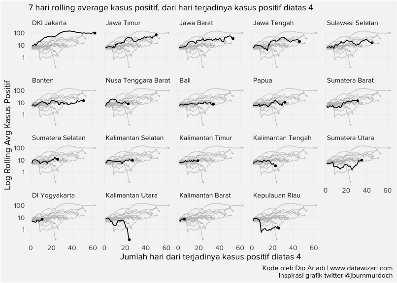
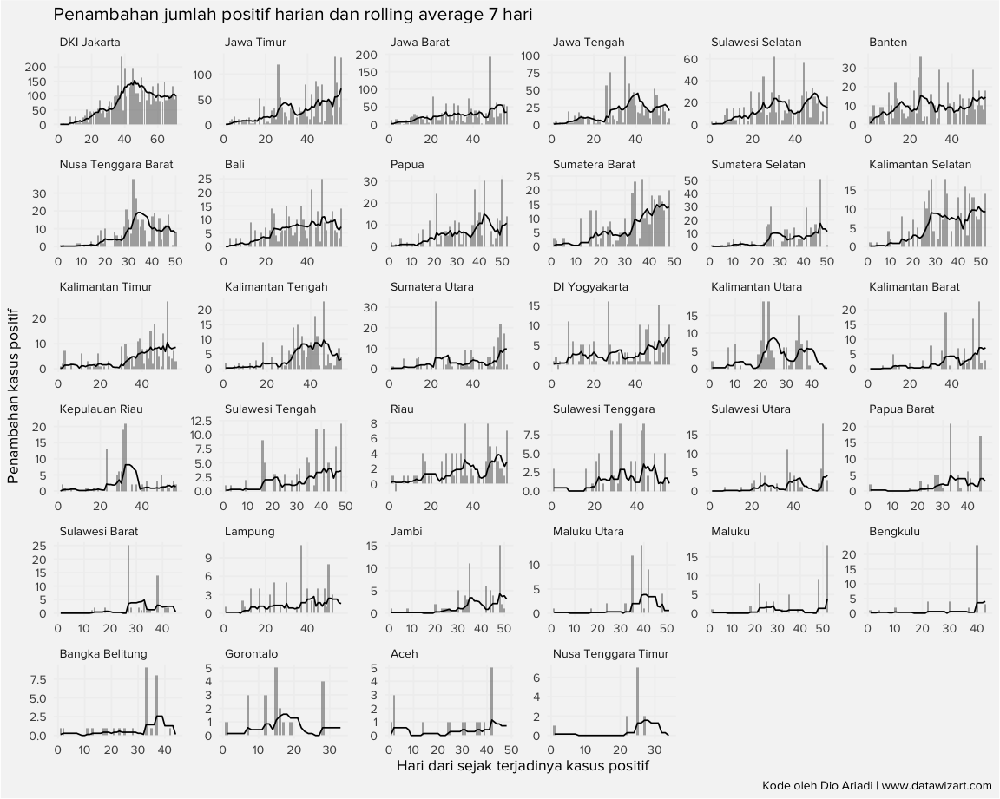
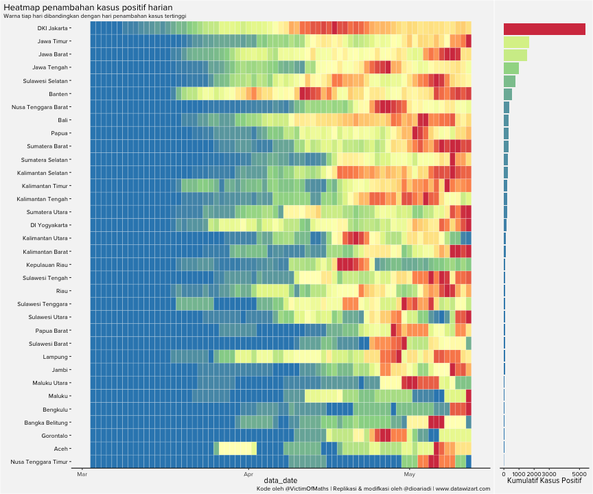
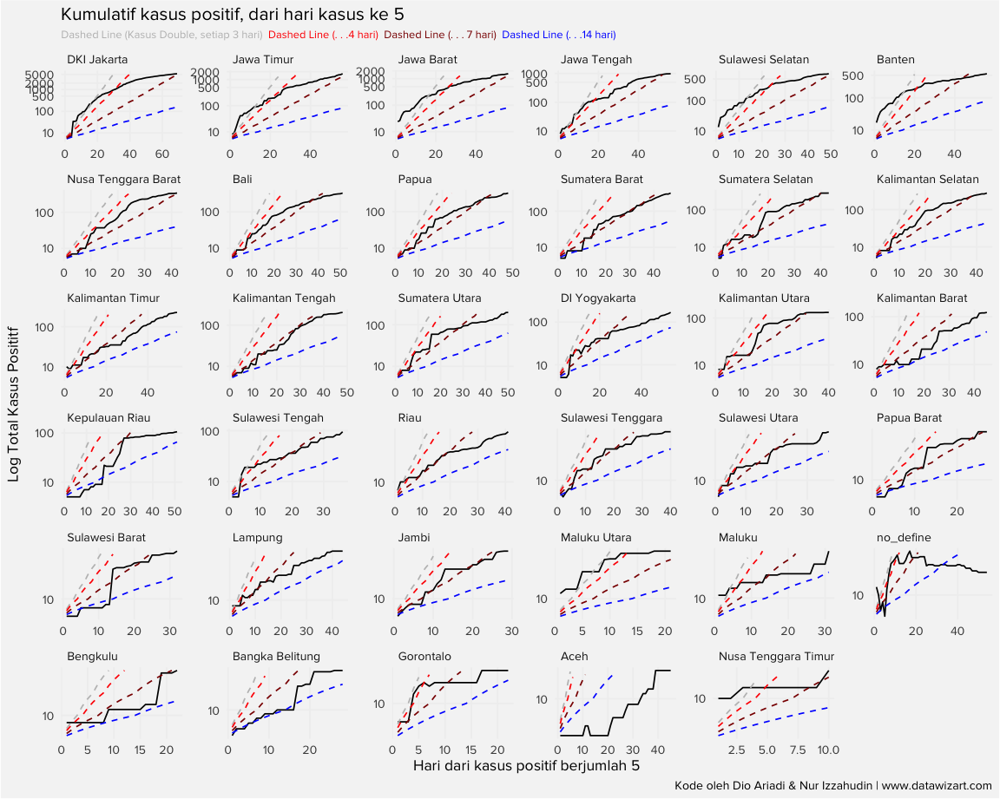
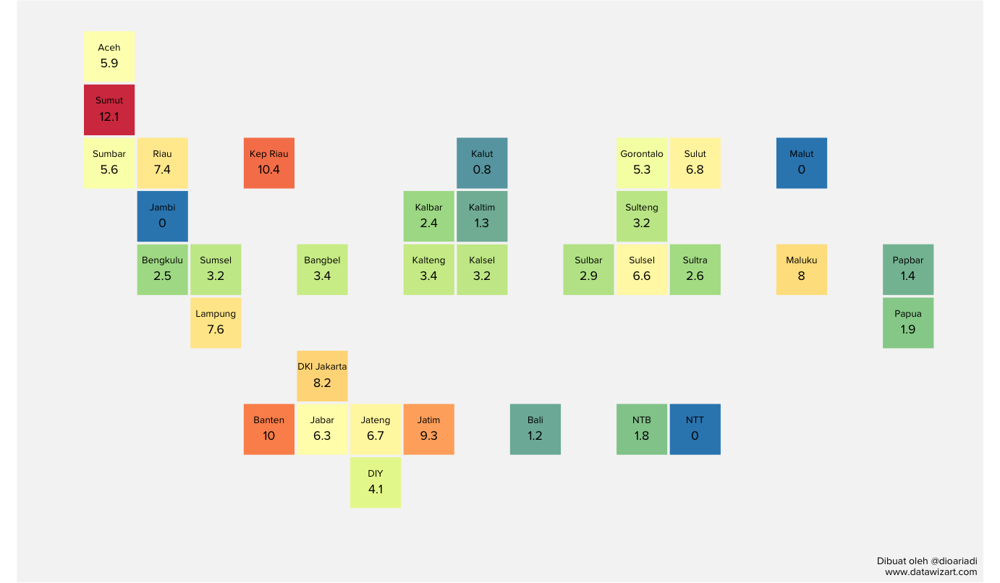
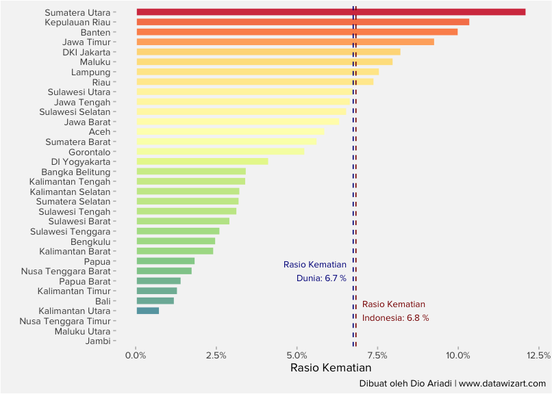

COVID-19 Tracker Indonesia
Bagaimana kondisi wilayah provinsi kalian? Apakah telah melewati puncak dari penambahan kasus?
Untuk menjawab pertanyaan ini kami membuat tiga grafik yang masing-masing dapat digunakan untuk menganalisis kasus Covid-19 di 34 provinsi di Indonesia. Ketiga grafik ini menampilkan rolling average 7-hari dari jumlah kasus positif Covid-19 di setiap provinsi. Grafik pertama dan kedua merupakan replikasi dari dashboard yang dibuat oleh Financial Times link. Sedangkan grafik ketiga adalah replikasi heatmap dari akun twitter @VictimOfMaths source. Ketiga grafik ini melengkapi satu sama lain, terdapat keunggulan dan kelemahan dalam tiap grafik. Dengan menampilkan ketiganya diharapkan dapat diambil analisa atau kesimpulan yang mencukupi.
Disclaimer bahwa penulis hanya membuat grafik dan tidak mengambil suatu kesimpulan.
Time-series Rolling Average Kasus Positif Baru
NOTE: Pada grafik pertama ini, kami memetakan rolling-average dari satu provinsi dalam satu garis time-series sehingga lebih mudah melakukan perbandingan antar-provinsi. Dalam grafik ini, rolling average dimulai ketika jumlah kasus sudah mencapai 4 atau lebih kasus.
Code
heatmap_daily_indo %>% group_by(province) %>%
mutate(dott_y = if_else(seq_==max(seq_),casesroll_avg,NaN)) %>%
ungroup() %>%
ggplot(aes(x=seq_ ,group=province ))+
geom_line(aes( y = casesroll_avg))+
geom_point(aes(y = dott_y),size=1)+
gghighlight(use_direct_label = FALSE,unhighlighted_params = list(size=0.4))+
scale_y_continuous(trans='log2',
breaks=c(1,10,100,500,1000,5000,10000,25000,80000,120000))+
facet_wrap(~province)+
labs(subtitle = "7 hari rolling average kasus positif, dari hari terjadinya kasus positif diatas 4",
y = "Log Rolling Avg Kasus Positif",
x = "Jumlah hari dari terjadinya kasus positif diatas 4",
caption = "Kode oleh Dio Ariadi | www.datawizart.com\nInspirasi grafik twitter @jburnmurdoch")+
theme(panel.background = element_rect(fill = "#f5f5f5"),
text = element_text(family = "Proxima Nova"),
panel.grid.major = element_line(colour = "#f0f0f0"),
panel.grid.minor = element_blank(),
axis.ticks = element_blank(),
strip.background = element_rect(fill = "#f5f5f5"),
plot.background = element_rect(fill = "#f5f5f5"),
strip.text.x = element_text(hjust = 0))
Time-series Kasus Positif Harian dan Rolling Average 7 Hari
Pada grafik kedua, kita dapat melihat lebih detail pertambahan kasus di tiap provinsi. Selain menggunakan line chart yang menggambarkan rolling average, grafik ini menggunakan bar chart yang mengilustrasikan jumlah kasus positif per hari di provinsi tersebut. Kita dapat melihat dengan jelas pada hari keberapa peak terjadi di suatu provinsi.
Code
heatmap_indo %>% filter(total_case>0 & province!="no_define") %>%
arrange(data_date) %>%
group_by(province) %>%
mutate(seq_=row_number()) %>%
ungroup() %>%
ggplot(aes(x=seq_))+
geom_col(aes(y = daily_case),alpha=0.5)+
geom_line(aes(y = casesroll_avg))+
labs(title = "Penambahan jumlah positif harian dan rolling average 7 hari",
subtile = "Bar adalah penambahan harian, line adalah rolling avg",
x = "Hari dari sejak terjadinya kasus positif",
y = "Penambahan kasus positif",
caption = "Kode oleh Dio Ariadi | www.datawizart.com")+
facet_wrap(~province,scales = "free")+
theme(panel.background = element_rect(fill = "#f5f5f5"),
text = element_text(family = "Proxima Nova"),
panel.grid.major = element_line(colour = "#f0f0f0"),
panel.grid.minor = element_blank(),
axis.ticks = element_blank(),
strip.background = element_rect(fill = "#f5f5f5"),
plot.background = element_rect(fill = "#f5f5f5"),
strip.text.x = element_text(hjust = 0))
Heatmap per Provinsi
Heatmap ini menggambarkan 7 hari rolling average dari kasus positif baru yang dinormalisasi berdasarkan nilai kasus positif terbesar di tiap provinsi. Semakin hijau map suatu provinsi berarti semakin jauh rolling average bergerak dari jumlah kasus positif tertinggi. Hal ini dapat diinterpretasikan bahwa provinsi tersebut telah melewati puncak pertambahan kasus baru.
Code
heatmap_indo_2 <- heatmap_indo %>% filter(province!="no_define")
heatmap_indo_2$province <- fct_reorder(heatmap_indo_2$province, heatmap_indo_2$total_case,max)
#https://github.com/VictimOfMaths/COVID-19
heatmap_indo_2$maxcaseprop <- heatmap_indo_2$casesroll_avg/heatmap_indo_2$maxcaserate
casetiles <- ggplot(heatmap_indo_2, aes(x=data_date, y=(province), fill=maxcaseprop))+
geom_tile(colour="White", show.legend=FALSE)+
theme_classic()+
scale_fill_distiller(palette="Spectral")+
scale_y_discrete(name="", expand=c(0,0))+
labs(title = "Heatmap penambahan kasus positif harian",
subtitle = "Warna tiap hari dibandingkan dengan hari penambahan kasus tertinggi",
caption="Kode oleh @VictimOfMaths | Replikasi & modifkasi oleh @dioariadi | www.datawizart.com")+
theme(
axis.line.y=element_blank(),
plot.subtitle=element_text(size=rel(0.78)),
plot.title.position="plot",
axis.text.y=element_text(colour="Black"),
text = element_text(family = "Proxima Nova"),
plot.background = element_rect(fill = "#f5f5f5"),
panel.background = element_rect(fill = "#f5f5f5")
)
casebar <- ggplot(subset(heatmap_indo_2, data_date==max(data_date)), aes(x=total_case, y=(province), fill=total_case))+
geom_col(show.legend=FALSE)+
theme_classic()+
scale_fill_distiller(palette="Spectral")+
scale_x_continuous(name="Kumulatif Kasus Positif", breaks=c(0,1000,2000,3000,5000))+
theme(axis.title.y=element_blank(),
axis.line.y=element_blank(),
axis.text.y=element_blank(),
axis.ticks.y=element_blank(),
axis.text.x=element_text(colour="Black"),
text = element_text(family = "Proxima Nova"),
plot.background = element_rect(fill = "#f5f5f5"),
panel.background = element_rect(fill = "#f5f5f5"))
plot_grid(casetiles, casebar, align="h", rel_widths=c(1,0.2))
Perkembangan Kasus Positif
Pada grafik keempat, kami menampilkan grafik log kumulatif jumlah kasus dari hari jumlah kasus lebih dari 4. Terdapat garis bantu untuk melihat bagaimana laju pertambahan kasus positif suatu kota. Bila garis hitam mengikuti arah dari salah satu garis bantu artinya kasus akan meningkat dua kali lipat dalam jangka waktu garis tersebut.
Code
label_case=
bind_rows(data.frame(value = seq_fun(start_value = 5, end_value = max(df_indo$total_case), 3), double_each = 3) %>% mutate(seq_ = row_number()-1),
data.frame(value = seq_fun(start_value = 5, end_value = max(df_indo$total_case), 2), double_each = 2) %>% mutate(seq_ = row_number()-1),
data.frame(value = seq_fun(start_value = 5, end_value = max(df_indo$total_case), 7), double_each = 7) %>% mutate(seq_ = row_number()-1),
data.frame(value = seq_fun(start_value = 5, end_value = max(df_indo$total_case), 4), double_each = 4) %>% mutate(seq_ = row_number()-1),
data.frame(value = seq_fun(start_value = 5, end_value = max(df_indo$total_case), 14), double_each = 14) %>% mutate(seq_ = row_number()-1))
label_case <- label_case %>% pivot_wider(names_from = double_each,values_from = value)
case_cumulative <- heatmap_indo %>% filter( total_case>4 & province!="no_defined") %>%
group_by(province) %>%
arrange(data_date) %>%
mutate(seq_ = row_number()) %>%
ungroup() %>%
group_by(province,total_case) %>%
mutate(seq_1 = row_number()) %>% ungroup()
case_cumulative <- case_cumulative %>% left_join(label_case,by = c("seq_"))
case_cumulative <- case_cumulative %>%
group_by(province) %>%
mutate(`3` = ifelse(`3`>max(total_case),NA,`3`),
`2` = ifelse(`2`>max(total_case),NA,`2`),
`7` = ifelse(`7`>max(total_case),NA,`7`),
`4` = ifelse(`4`>max(total_case),NA,`4`),
`14` = ifelse(`14`>max(total_case),NA,`14`))
case_cumulative %>%
ggplot()+
geom_line(aes(x=seq_,y=total_case) )+
geom_line(aes(x = seq_,y = `3`) ,linetype="dashed",color="grey")+
geom_line(aes(x = seq_,y = `14`),linetype="dashed",color="blue")+
geom_line(aes(x = seq_,y = `4`) ,linetype="dashed",color="red")+
geom_line(aes(x = seq_,y = `7`) ,linetype="dashed",color="darkred")+
scale_y_continuous(trans='log2',
breaks=c(10,100,500,1000,2000,5000,10000,25000,80000,120000))+
facet_wrap(~province,scales = "free")+
labs(y = "Log Total Kasus Posititf", x = "Hari dari kasus positif berjumlah 5",
caption = "Kode oleh Dio Ariadi & Nur Izzahudin | www.datawizart.com",
title = "Kumulatif kasus positif, dari hari kasus ke 5",
subtitle = "<span style='color:grey'>Dashed Line (Kasus Double, setiap 3 hari)</span> <span style='color:red'>Dashed Line (. . .4 hari)</span> <span style='color:darkred'>Dashed Line (. . . 7 hari)</span> <span style='color:blue'>Dashed Line (. . .14 hari)</span>")+
theme(panel.background = element_rect(fill = "#f5f5f5"),
text = element_text(family = "Proxima Nova"),
panel.grid.major = element_line(colour = "#f0f0f0"),
panel.grid.minor = element_blank(),
axis.ticks = element_blank(),
strip.background = element_rect(fill = "#f5f5f5"),
plot.background = element_rect(fill = "#f5f5f5"),
strip.text.x = element_text(hjust = 0),
plot.subtitle = element_markdown(size = 8))
Tingkat Kematian Per Provinsi
Tingkat kematian didefinisikan sebagai jumlah kasus meninggal dibagi jumlah kasus positif. Dapat kita lihat bahwa provinsi-provinsi dengan tingkat kematian tertinggi banyak terdapat di pulau Jawa dan Sumatera.
Code
death_ratio_df <- df_indo %>%
group_by(code,province) %>%
arrange(data_date) %>%
mutate(rank_ = row_number(),
n_ = n()) %>%
filter(rank_ == n_) %>%
ungroup() %>%
mutate(death_ratio = total_death/total_case,
death_ratio = ifelse(is.na(death_ratio),0,death_ratio)) %>%
left_join(indo_grid[,c(1,2,5,6)], by = c("province"="name_indo"))
death_ratio_df %>%
ggplot(aes(x = (col), y = -1*row,
fill = death_ratio))+
geom_tile(color = "#f5f5f5",size=1)+
geom_text(aes(label=round(death_ratio,3)*100),vjust=1.2,family = "Proxima Nova")+
geom_text(aes(label=name_short),vjust =-1,family = "Proxima Nova",size = 3)+
labs(x = "",y= "", caption = "Dibuat oleh @dioariadi\nwww.datawizart.com")+
coord_equal()+
scale_fill_distiller(palette="Spectral")+
theme(panel.grid = element_blank(),
text = element_text(family = "Proxima Nova"),
strip.background = element_blank(),
axis.text.x = element_blank(),
axis.ticks.x = element_blank(),
strip.text.x = element_text(size = 7),
axis.text.y = element_blank(),
axis.ticks.y = element_blank(),
plot.background=element_rect(fill = "#f5f5f5"),
panel.background = element_rect(fill = "#f5f5f5"),
legend.position = "none")
Code
overall_indo <- sum(death_ratio_df$total_death)/sum(death_ratio_df$total_case)
overall_world <- read_rds("df_worldmeter_analysis.rds") %>% group_by(country) %>% slice(which.max(data_date)) %>% ungroup() %>% summarise(sum(deaths,na.rm = TRUE)/sum(cases,na.rm = TRUE)) %>% pull()
death_ratio_df %>% filter(province!="no_define") %>%
ggplot(aes(x = fct_reorder(province,death_ratio),
y = death_ratio,
fill = death_ratio))+
geom_col(color = "#f5f5f5",size=1)+
geom_hline(aes(yintercept= overall_indo),linetype ="dashed",color = "darkred")+
geom_hline(aes(yintercept= overall_world),linetype ="dashed",color = "darkblue")+
#geom_text(aes(x = 4, y = 0.082, label = paste("Rasio Kematian\n Indonesia:",round(overall_indo,3)*100)), family= "Proxima Nova",size =3)+
annotate("text", x = 4, y = overall_indo+0.002, label = paste("Rasio Kematian\nIndonesia:",round(overall_indo,3)*100,"%"),family = "Proxima Nova",
size=3,
colour ="darkred",
hjust = 0)+
annotate("text", x = 8, y = overall_world-0.002, label = paste("Rasio Kematian\nDunia:",round(overall_world,3)*100,"%"),family = "Proxima Nova",
size=3,
colour ="darkblue",
hjust = 1)+
labs(x = "",
y = "Rasio Kematian",
caption = "Dibuat oleh Dio Ariadi | www.datawizart.com")+
coord_flip()+
scale_fill_distiller(palette="Spectral")+
scale_y_continuous(labels = scales::percent)+
theme(panel.grid = element_blank(),
text = element_text(family = "Proxima Nova"),
strip.background = element_blank(),
axis.ticks.x = element_line(colour = "grey"),
strip.text.x = element_text(size = 7),
axis.ticks.y = element_line(colour = "grey"),
plot.background=element_rect(fill = "#f5f5f5"),
panel.background = element_rect(fill = "#f5f5f5"),
legend.position = "none")
Code
#geom_text(aes(label=round(death_ratio,3)*100),vjust=1.2,family = "Proxima Nova")+
#geom_text(aes(label=name_short),vjust =-1,family = "Proxima Nova",size = 3)Apakah dapat dibuat kesimpulan dari gambar di atas?
Untuk pengambilan kesimpulan kembali ke pembaca masing-masing. Sebagai referensi Kematian Jakarta naik 52% dibandingkan rata-rata tahun sebelumnya.
Kritik dan Saran
email dioariadi11@gmail.com
Appendix
Contributor
Tanggal PSBB
Sumber Data
- Indonesia: @kawalCOVID19 · https://covid19.go.id/
- Internasional: worldmeters